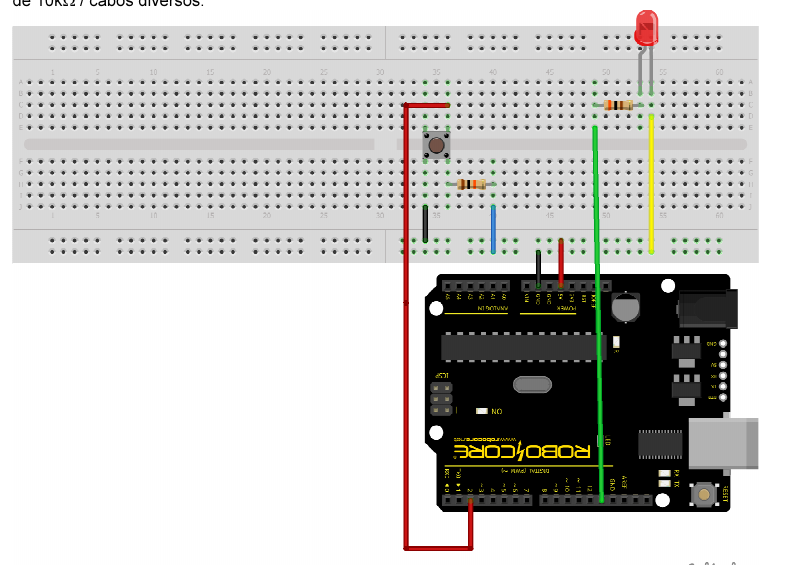
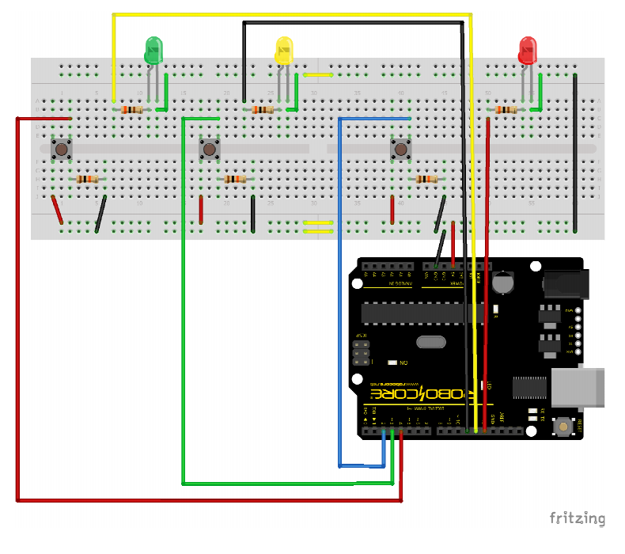
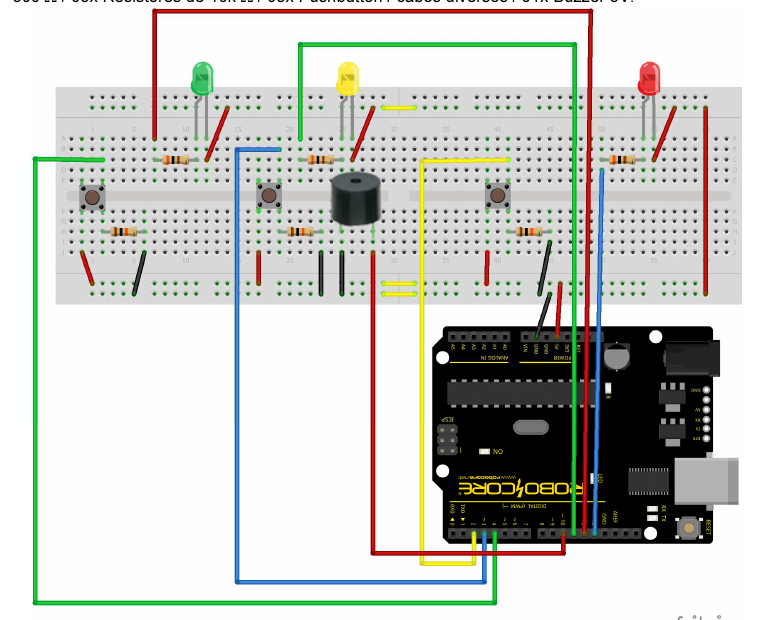
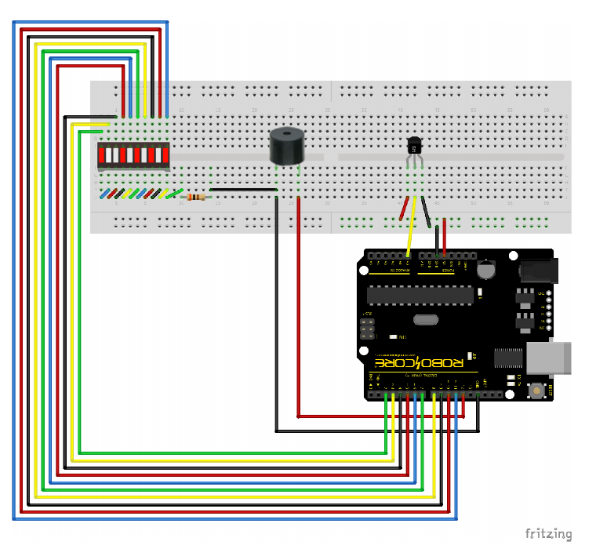
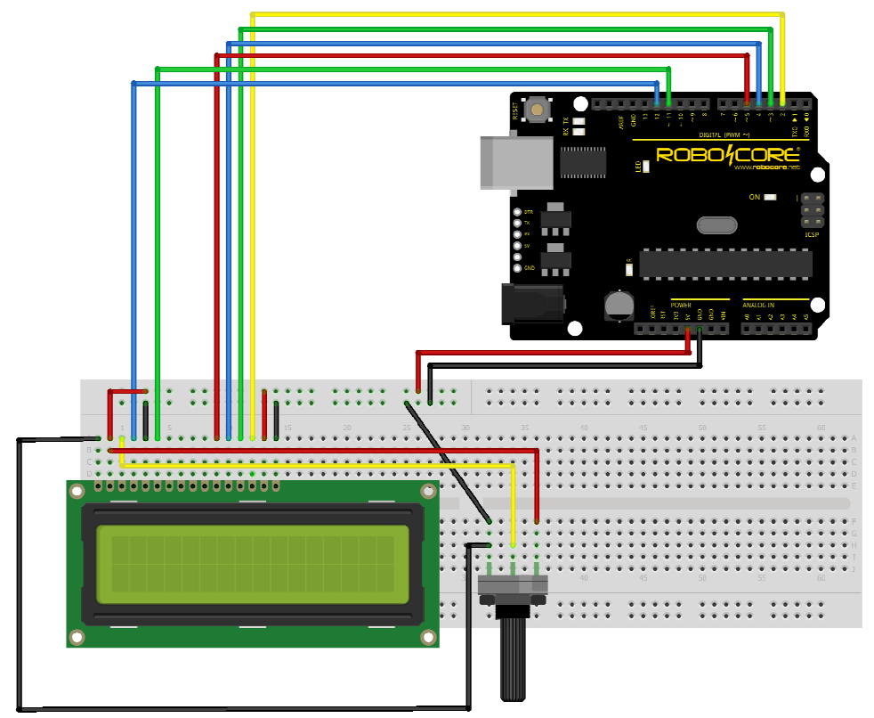
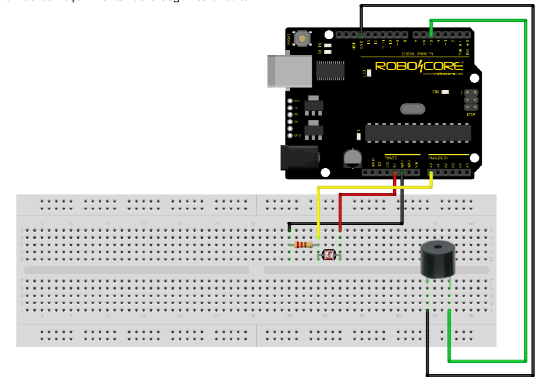

Reforço rápido
Explore a atividade interativa ou baixe uma ficha. Você pode escolher qualquer atividade, sem seguir a ordem das missões.
Atividade extra 01: Botão acende LED
Monte o circuito e programe o Arduino para acender um LED enquanto o botão estiver pressionado. Ao soltar o botão, o LED deve apagar.
Componentes
- 1 LED vermelho
- 1 resistor de 300 Ω
- 1 pushbutton
- 1 resistor de 10 kΩ
- Arduino, protoboard e fios
Ligações
- Conecte o pino digital 13 ao LED em série com o resistor de 300 Ω; ligue o outro lado ao GND.
- Ligue um lado do botão ao 5 V e o outro ao pino digital 2.
- Conecte o resistor de 10 kΩ entre o pino 2 e o GND para manter a entrada em nível baixo quando o botão estiver solto.

Programa
const int ledPin = 13;
const int Botao = 2;
int EstadoBotao = 0;
void setup() {
pinMode(ledPin, OUTPUT);
pinMode(Botao, INPUT);
}
void loop() {
EstadoBotao = digitalRead(Botao);
if (EstadoBotao == HIGH) {
digitalWrite(ledPin, HIGH);
} else {
digitalWrite(ledPin, LOW);
}
}Teste
- Confira as ligações e carregue o programa na placa.
- Pressione o botão: o LED deve acender.
- Solte o botão: o LED deve apagar.
Atividade extra 02: Três botões e três LEDs
Amplie a atividade anterior: pressione qualquer botão para acender o LED correspondente. Ao soltar o botão, esse LED deve apagar. Cada botão controla apenas um LED.
Componentes
- 1 LED verde, 1 LED amarelo e 1 LED vermelho
- 3 resistores de 300 Ω para os LEDs
- 3 pushbuttons
- 3 resistores de 10 kΩ para as entradas dos botões
- Arduino, protoboard e fios
Ligações
- LED verde no pino 13, LED amarelo no pino 12 e LED vermelho no pino 11; use um resistor de 300 Ω em série com cada LED e conecte ao GND.
- Botões 1, 2 e 3 nos pinos digitais 2, 3 e 4, respectivamente. Ligue um lado de cada botão ao 5 V.
- Use um resistor de 10 kΩ entre cada entrada (pinos 2, 3 e 4) e o GND para manter o sinal baixo enquanto o botão estiver solto.

Programa
const int ledPin1 = 13;
const int ledPin2 = 12;
const int ledPin3 = 11;
const int botao1 = 2;
const int botao2 = 3;
const int botao3 = 4;
int estadoBotao1 = LOW;
int estadoBotao2 = LOW;
int estadoBotao3 = LOW;
void setup() {
pinMode(ledPin1, OUTPUT);
pinMode(ledPin2, OUTPUT);
pinMode(ledPin3, OUTPUT);
pinMode(botao1, INPUT);
pinMode(botao2, INPUT);
pinMode(botao3, INPUT);
}
void loop() {
estadoBotao1 = digitalRead(botao1);
estadoBotao2 = digitalRead(botao2);
estadoBotao3 = digitalRead(botao3);
digitalWrite(ledPin1, estadoBotao1);
digitalWrite(ledPin2, estadoBotao2);
digitalWrite(ledPin3, estadoBotao3);
}Teste
- Confira a polaridade dos LEDs e as ligações dos três resistores de 10 kΩ.
- Carregue o programa e pressione cada botão separadamente.
- Confirme que acende o LED correspondente e que ele apaga ao soltar o botão.
Atividade extra 03: Projeto Piano
Monte um pequeno piano eletrônico: cada botão toca uma nota e acende o LED correspondente. Ao soltar o botão, o LED apaga e o buzzer para. Você também pode expandir o projeto com uma quarta nota usando um botão e o LED reserva.
Componentes
- 1 LED verde, 1 LED amarelo e 1 LED vermelho
- 3 resistores de 300 Ω para os LEDs
- 3 pushbuttons e 3 resistores de 10 kΩ
- 1 buzzer piezo compatível com a função
tone() - Arduino, protoboard e fios
Ligações
- LED verde no pino 13, amarelo no pino 12 e vermelho no pino 11; use um resistor de 300 Ω em série com cada LED.
- Botões 1, 2 e 3 nos pinos digitais 2, 3 e 4. Ligue um lado de cada botão ao 5 V e use um resistor de 10 kΩ entre cada entrada e o GND.
- Ligue o sinal positivo do buzzer ao pino digital 10 e o terminal negativo ao GND. Confira a polaridade indicada no componente.

Programa
const int ledPin1 = 13;
const int ledPin2 = 12;
const int ledPin3 = 11;
const int botao1 = 2;
const int botao2 = 3;
const int botao3 = 4;
const int buzzerPin = 10;
int estadoBotao1 = LOW;
int estadoBotao2 = LOW;
int estadoBotao3 = LOW;
void setup() {
pinMode(ledPin1, OUTPUT);
pinMode(ledPin2, OUTPUT);
pinMode(ledPin3, OUTPUT);
pinMode(botao1, INPUT);
pinMode(botao2, INPUT);
pinMode(botao3, INPUT);
pinMode(buzzerPin, OUTPUT);
}
void loop() {
estadoBotao1 = digitalRead(botao1);
estadoBotao2 = digitalRead(botao2);
estadoBotao3 = digitalRead(botao3);
if (estadoBotao1 == HIGH && estadoBotao2 == LOW && estadoBotao3 == LOW) {
digitalWrite(ledPin1, HIGH);
digitalWrite(ledPin2, LOW);
digitalWrite(ledPin3, LOW);
tone(buzzerPin, 100);
} else if (estadoBotao2 == HIGH && estadoBotao1 == LOW && estadoBotao3 == LOW) {
digitalWrite(ledPin1, LOW);
digitalWrite(ledPin2, HIGH);
digitalWrite(ledPin3, LOW);
tone(buzzerPin, 500);
} else if (estadoBotao3 == HIGH && estadoBotao1 == LOW && estadoBotao2 == LOW) {
digitalWrite(ledPin1, LOW);
digitalWrite(ledPin2, LOW);
digitalWrite(ledPin3, HIGH);
tone(buzzerPin, 1000);
} else {
digitalWrite(ledPin1, LOW);
digitalWrite(ledPin2, LOW);
digitalWrite(ledPin3, LOW);
noTone(buzzerPin);
}
}Teste
- Confira a polaridade dos LEDs, os resistores dos botões e as ligações do buzzer.
- Carregue o programa e pressione cada botão separadamente.
- Confirme que cada botão acende um LED e toca uma frequência diferente; ao soltar, o som para e o LED apaga.
tone() e compare os sons. Para este exemplo, os botões tocam 100, 500 e 1000 Hz.Atividade extra 04: Termômetro com barra de LEDs
Use o sensor LM35 para medir a temperatura do ambiente. Conforme a leitura aumenta, mais LEDs da barra gráfica acendem; acima de 28 °C, o buzzer emite um alerta.
Componentes
- 1 sensor de temperatura LM35
- 1 barra gráfica de 10 LEDs
- Resistores de 300 Ω conforme a montagem do kit
- 1 buzzer de 5 V
- Arduino, protoboard e fios
Ligações
- Conecte a saída do LM35 à entrada analógica A0; ligue alimentação e GND conforme a orientação do encapsulamento do sensor.
- Conecte os dez segmentos da barra gráfica às saídas digitais 2 a 11, respeitando a polaridade e o sentido indicados no componente.
- Ligue o terminal positivo do buzzer ao pino digital 12 e o outro terminal ao GND.

Programa
const int sensorLM35 = A0;
const int buzzerPin = 12;
const int leds[] = {2, 3, 4, 5, 6, 7, 8, 9, 10, 11};
void setup() {
analogReference(INTERNAL); // Arduino Uno: referência interna de 1,1 V
pinMode(buzzerPin, OUTPUT);
for (int i = 0; i < 10; i++) {
pinMode(leds[i], OUTPUT);
}
}
void loop() {
int leituraADC = analogRead(sensorLM35);
float temperatura = leituraADC * 0.10752688;
for (int i = 0; i < 10; i++) {
float limite = 23.5 + (0.5 * i);
digitalWrite(leds[i], temperatura > limite ? HIGH : LOW);
}
if (temperatura > 28.0) {
tone(buzzerPin, 2000);
} else {
noTone(buzzerPin);
}
}Teste
- Confira a polaridade do LM35, da barra gráfica e do buzzer antes de energizar o circuito.
- Carregue o programa e observe quantos LEDs acendem na temperatura ambiente.
- Aqueça o sensor suavemente com os dedos: a barra deve avançar conforme a leitura aumenta.
- Observe o buzzer quando a leitura ultrapassar 28 °C.
INTERNAL1V1; no Leonardo, remova a chamada analogReference(INTERNAL) e ajuste a conversão conforme a placa.Atividade extra 05: Módulo 6, LCD por comunicação serial
Envie caracteres pelo Monitor Serial e mostre o texto recebido em tempo real no display LCD. Cada caractere ocupará uma posição e o cursor avançará entre as colunas e linhas.
Componentes
- 1 display LCD 16x2
- Arduino, protoboard e fios
- Cabo USB para abrir o Monitor Serial
Ligações
- LCD nos pinos digitais definidos pela biblioteca: RS no 12, Enable no 11 e dados nos pinos 5, 4, 3 e 2.
- Alimente o LCD com 5 V e GND; ajuste o contraste com o potenciômetro indicado no circuito do kit.

Programa
#include <LiquidCrystal.h>
LiquidCrystal lcd(12, 11, 5, 4, 3, 2);
int incomingByte, x, y;
void setup() {
lcd.begin(16, 2);
Serial.begin(9600);
x = 0;
y = 0;
}
void loop() {
if (Serial.available() > 0) {
incomingByte = Serial.read();
lcd.print(char(incomingByte));
x = x + 1;
y = y + 1;
if (x > 15) {
lcd.setCursor(0, 1);
x = 0;
}
if (y > 31) {
lcd.setCursor(0, 0);
y = 0;
x = 0;
}
}
}Teste
- Monte o LCD e carregue o programa no Arduino.
- Abra o Monitor Serial e configure a velocidade em 9600 baud.
- Digite uma mensagem e clique em Enviar.
- Observe os caracteres aparecerem no LCD e o cursor avançar pelas duas linhas.
Serial.available() verifica se chegou informação pela porta serial; Serial.read() lê o byte recebido e lcd.print(char(incomingByte)) o transforma em caractere no display.Atividade extra 06: Theremin Agudo
Monte um instrumento eletrônico sem contato físico com as teclas. A luminosidade recebida pelo LDR altera a frequência do buzzer e, portanto, o som produzido.
Componentes
- 1 sensor de luminosidade LDR
- 1 resistor de 10 kΩ
- 1 buzzer compatível com a função
tone() - Arduino, protoboard e fios
Ligações
- Ligue o LDR e o resistor em divisor de tensão na entrada analógica A0.
- Conecte um terminal do buzzer ao pino digital 5 e o outro ao GND.
- Depois de montar, cubra e destampe o LDR vagarosamente para comparar as frequências produzidas.

Programa
int valorSensor = 0;
int nota = 0;
const int buzzerPin = 5;
void setup() {
pinMode(buzzerPin, OUTPUT);
}
void loop() {
valorSensor = analogRead(A0);
nota = map(valorSensor, 1023, 0, 1000, 6000);
tone(buzzerPin, nota, 20);
delay(10);
}Teste
- Confira o divisor formado pelo LDR e pelo resistor de 10 kΩ.
- Carregue o programa e observe o som do buzzer.
- Tape o LDR e destampe vagarosamente para ouvir mudanças de frequência.
- Compare diferentes ambientes: sombra, luz natural e luz direta.
map() podem ser ajustados para cada sensor e ambiente. No exemplo da apostila, o som varia entre aproximadamente 1000 Hz e 6000 Hz.